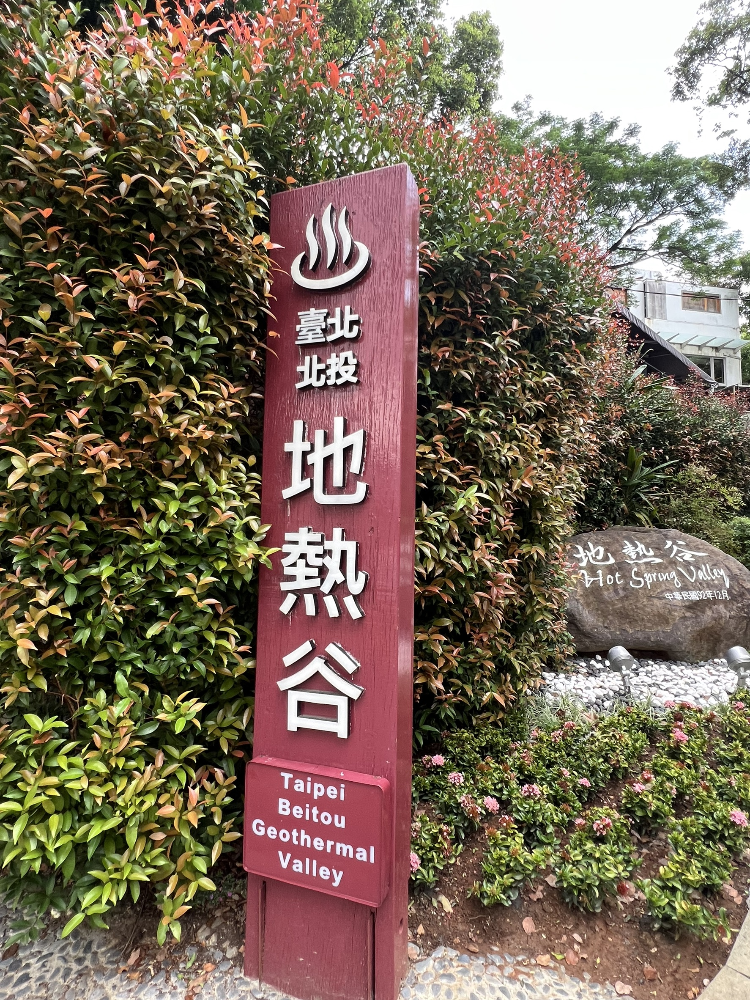
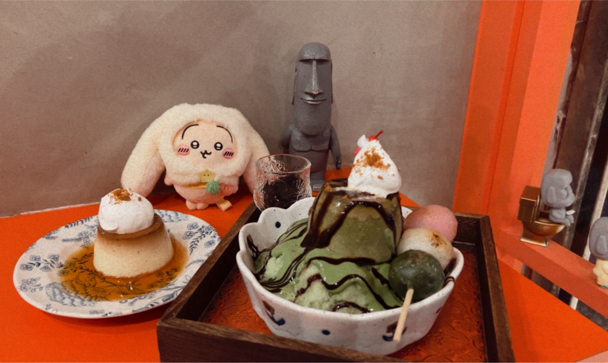
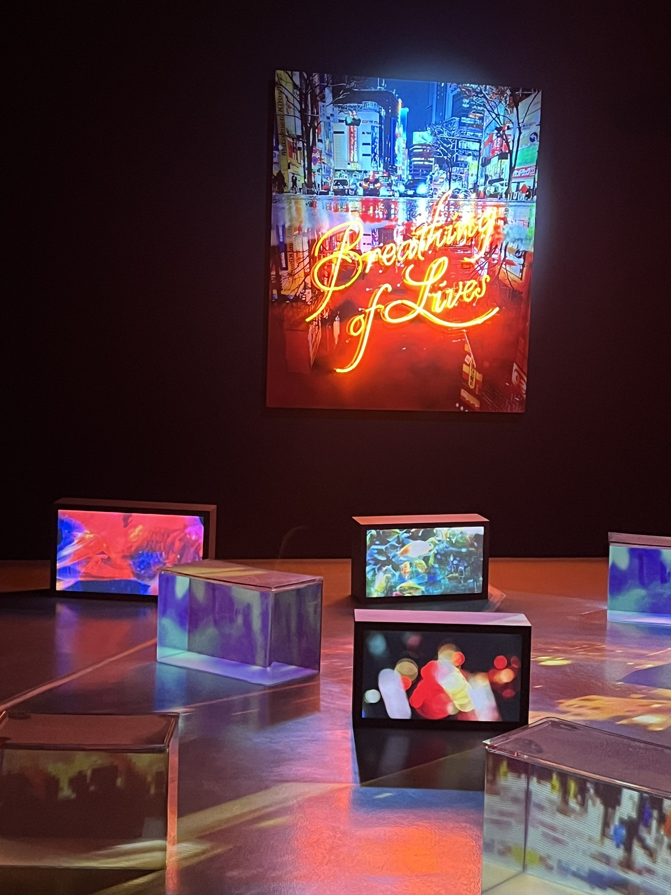
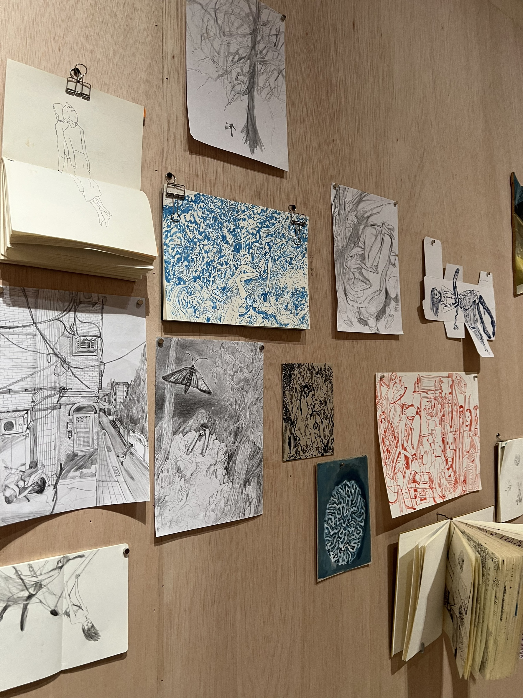
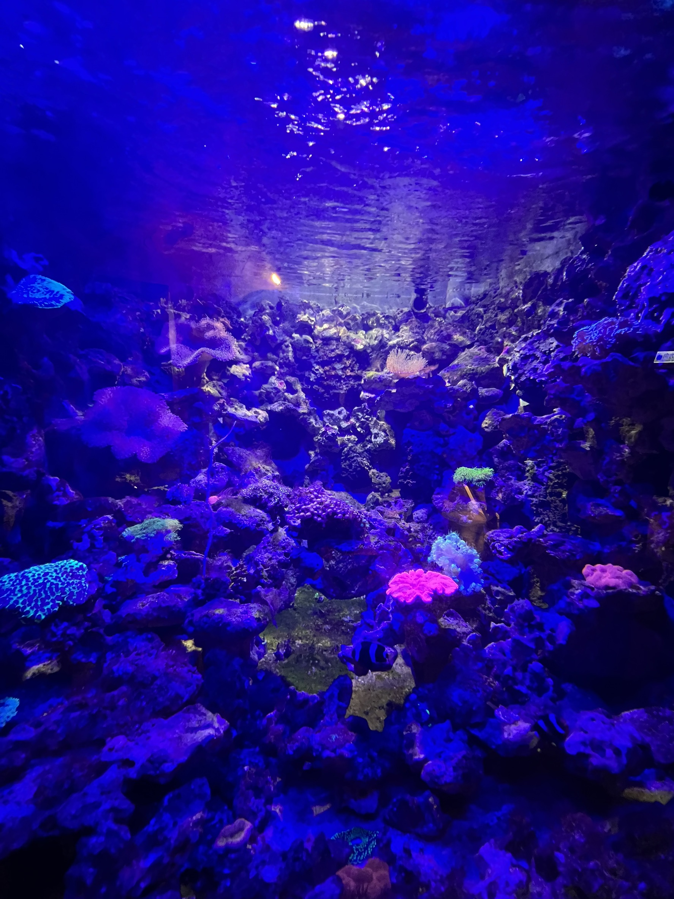
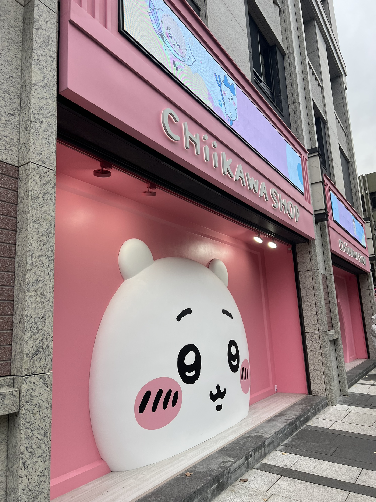

北投地熱谷
位於台北市北投區，是一個著名的地熱景點。這裡有壯觀的地熱活動，如熱氣騰騰的溫泉池和蒸汽噴發。周圍設有舒適的步道與觀景平台，讓遊客能近距離觀察自然風光。
READ STORY


華山 蜷川實花展
「彼岸之光，此岸之影」
❀ 現實與虛擬交錯，展開沉浸式光影藝術體驗。
✿ 720 度全景影像 × 絢麗花園交織，邀你走入夢幻異境。
蜷川實花睽違10年再度於台北舉辦大型個展——《蜷川實花展 with EiM：彼岸之光，此岸之影》，本次為海外最大規模的沉浸式藝術體驗，由蜷川實花與科技藝術團隊 EiM 共同策劃，突破以往以平面攝影為主的創作形式，透過立體裝置與影像作品，帶領觀眾進入虛擬與現實交錯的感官之旅。展覽共八大展區，不僅有盛開的絢麗花園、還有約 2,000 條水晶串飾隨光影律動的奇幻空間，並結合 720 度全景影像，構築無限延伸的視覺幻境，帶來前所未有的沉浸式震撼。
READ STORY
❀ 現實與虛擬交錯，展開沉浸式光影藝術體驗。
✿ 720 度全景影像 × 絢麗花園交織，邀你走入夢幻異境。
蜷川實花睽違10年再度於台北舉辦大型個展——《蜷川實花展 with EiM：彼岸之光，此岸之影》，本次為海外最大規模的沉浸式藝術體驗，由蜷川實花與科技藝術團隊 EiM 共同策劃，突破以往以平面攝影為主的創作形式，透過立體裝置與影像作品，帶領觀眾進入虛擬與現實交錯的感官之旅。展覽共八大展區，不僅有盛開的絢麗花園、還有約 2,000 條水晶串飾隨光影律動的奇幻空間，並結合 720 度全景影像，構築無限延伸的視覺幻境，帶來前所未有的沉浸式震撼。


野柳 岩洞水族館
位於新北市萬里區，緊鄰野柳地質公園的隱藏秘境。這裡除了能近距離觀賞繽紛的室內水族生態，更有精彩絕倫的海獅、海豚表演秀，以及令人屏息的真人高空跳水演出，是兼具知識與娛樂的海洋奇幻世界。
READ STORY

台北《吉伊卡哇》常設店
吉伊卡哇愛好者的天堂！位於台北的官方常設店，店內滿滿都是小八、烏薩奇與吉伊的可愛身影。除了豐富的官方周邊與限定商品外，精緻的佈置讓人彷彿走進了漫畫世界，每一處角落都充滿療癒感，絕對是粉絲必訪的打卡點。
READ STORY

北投行天宮 落羽松
隱身於北投行天宮（忠義廟）後山的靜謐秘境。每逢秋冬交替，步道兩側的落羽松便會由綠轉為深紅焦糖色，在陽光灑落時顯得格外浪漫。這裡遠離城市的喧囂，在參拜之餘漫步於紅葉林間，能感受到洗滌心靈的平靜與季節流轉之美。
READ STORY